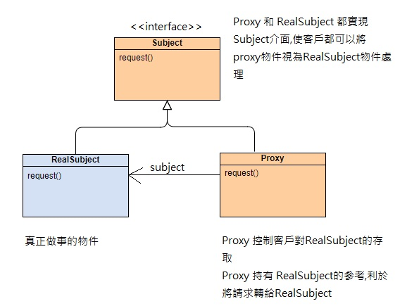

代理人模式
Proxy Pattern

讓某個物件具有一個替身，藉以控制外界對此物件的接觸
UML概念
實作代理人模式
實作
public class ProxyPattern { public static void main(String[] args) { SubjectProxyPattern subject = new Proxy(); subject.request(); } } interface SubjectProxyPattern { void request(); } class RealSubject implements SubjectProxyPattern { @Override public void request() { System.out.println("RealSubject!"); } } class Proxy implements SubjectProxyPattern { private final SubjectProxyPattern subject = new RealSubject(); public Proxy() { } @Override public void request() { System.out.println("service() 開始於:" + new Date()); subject.request(); System.out.println("service() 結束於:" + new Date()); } }
輸出